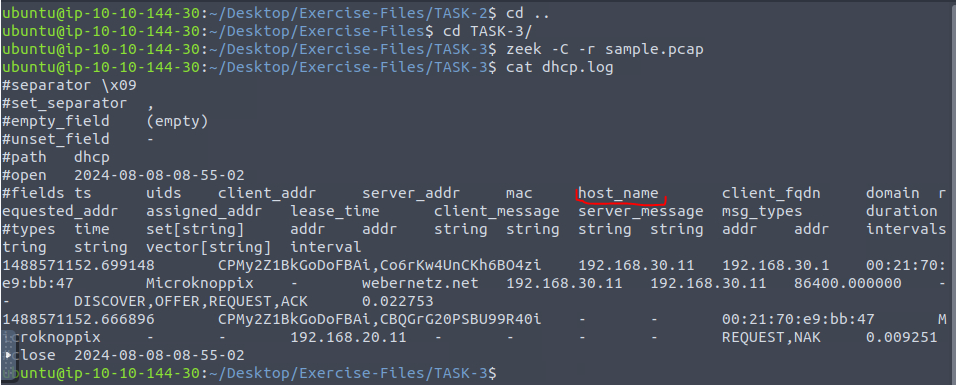
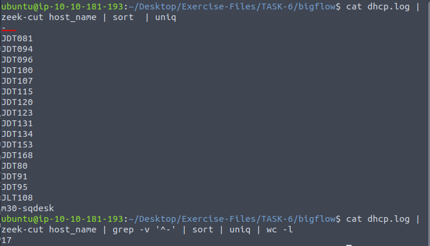
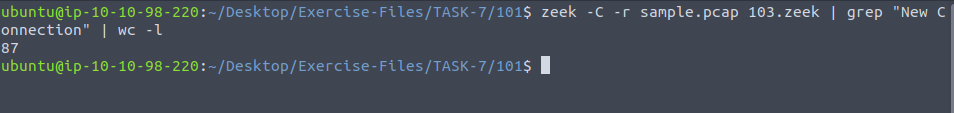

Zeek - Zaawansowane narzędzie do analizy ruchu sieciowego
2024-08-08
Co to jest Zeek?
Zeek to pasywny, open-source'owy analizator ruchu sieciowego. Jest często używany jako monitor bezpieczeństwa sieci (network security monitor) do badania podejrzanych aktywności. Zeek oferuje szeroki wachlarz zadań analizy ruchu, w tym pomiar wydajności i rozwiązywanie problemów.
Główne funkcje Zeek:
- Obszerne logi: Zeek generuje szczegółowe logi dotyczące aktywności sieciowej, w tym zapisy wszystkich sesji HTTP, żądania DNS, certyfikaty SSL i treści sesji SMTP. Logi są zapisywane w dobrze zorganizowanych plikach TSV lub JSON, które można przetwarzać zewnętrznym oprogramowaniem.
- Analiza i wykrywanie: Zeek potrafi m.in. wyodrębniać pliki z sesji HTTP, wykrywać malware, raportować wrażliwe wersje oprogramowania, identyfikować popularne aplikacje webowe oraz wykrywać brute-force SSH.
- Personalizacja i rozszerzalność: Zeek jest w pełni konfigurowalną platformą, posiadającą język skryptowy umożliwiający tworzenie niestandardowych zadań analizy.
- Skalowalność: Zeek działa na standardowym sprzęcie i wspiera skalowalne rozwiązania klastrowe, co pozwala na monitorowanie sieci o wysokiej przepustowości.
- Niezależność od sygnatur: Zeek nie jest klasycznym systemem wykrywania intruzów opartym na sygnaturach, lecz oferuje szersze podejście do wykrywania złośliwych aktywności, w tym wykrywanie anomalii i analiza behawioralna.
Dlaczego warto wybrać Zeek?
Zeek jest idealnym narzędziem dla zespołów ds. bezpieczeństwa i administracji sieci, które chcą lepiej zrozumieć ruch sieciowy. Zapewnia zbieranie i analizę danych sieciowych, co jest kluczowe w programach bezpieczeństwa. Zeek umożliwia gromadzenie danych transakcji, wyodrębnianie treści oraz generowanie alertów.
Zeek oferuje wbudowane funkcje do analizy i wykrywania zagrożeń oraz możliwość dostosowania do specyficznych potrzeb użytkowników. Dzięki swojej elastyczności i możliwości działania na standardowym sprzęcie, Zeek jest dostępny dla szerokiego grona użytkowników, oferując zaawansowane możliwości monitorowania sieci bez wysokich kosztów.
Zadania praktyczny ze strony TryHackme:
1. Network Security Monitoring and Zeek
W pierwszych zadaniach wprowadzających należały pokazać wersję Zeeka oraz wersję modułu ZeekCtl.
W kolejnym zadaniu wprowadzającym trzeba przeanalizować plik sample.pcap i odpowiedzieć na pytanie, ile plików z logami wygenerował Zeek.
2. Zeek Logs
Zaczynamy rozdział drugi, w którym opisane jest bardzo przydatne narzędzie zeek-cut, służące do wycinania konkretnych kolumn z logów Zeeka.
W pierwszym zadaniu należy przeanalizować plik sample.pcap za pomocą narzędzia Zeek, a następnie w wygenerowanym pliku dhcp.log odnaleźć informacje o hoście. Otwieramy plik za pomocą narzędzia cat. Na początku może wydawać się on bardzo nieczytelny, dlatego głównym celem jest przejrzenie dostępnych kolumn (#fields) i wybranie tych, które są potencjalnie potrzebne.
Gdy już wybierzemy odpowiednie kolumny, używamy narzędzia zeek-cut, które wytnie tylko te kolumny, dzięki czemu możemy dokładnie zobaczyć hosty występujące w sieci.
W kolejnym zadaniu należy policzyć, ile jest unikalnych zapytań DNS. Na początku postępujemy podobnie jak wcześniej, przeglądamy plik dns.log. Tym razem plik może wydawać się jeszcze mniej czytelny, ale to nie problem, ponieważ wystarczy odnaleźć kolumny związane z zapytaniami
Ciekawsza jest ta część zadania, ponieważ można użyć większej liczby narzędzi linuksowych, aby ułatwić sobie liczenie. W naszym przypadku zapytań jest stosunkowo mało, więc można je policzyć po prostu wypisując wszystkie zapytania. Jednak gdyby zapytań było 100, 200, a nawet 10 000, sprawa mogłaby się skomplikować. Na szczęście mamy do dyspozycji komendę uniq, która wyświetli tylko unikalne zapytania, oraz komendę wc -l, która policzy ich liczbę, tak jak pokazano na poniższym zdjęciu:
Ostatnie zadanie tego rozdziału jest bardzo podobne do poprzednich. Należy znaleźć najdłuższy czas trwania połączenia. Tym razem dodatkowo użyjemy narzędzia sort -nr, które posortuje wyniki numerycznie i wypisze je od największego do najmniejszego.
3. Zeek Signatures
W kolejnym rozdziale zajmiemy się sygnaturami w Zeeku, które pomagają w identyfikacji istotnych aktywności w sieci. Sygnatury Zeeka wykorzystują dopasowywanie wzorców na niskim poziomie.
Pierwszą sygnaturą którą musimy napisać w zadaniu a raczej dokończyć pisać to sygnatura znajdująca potenjalne hasła zapisane w postacci zwykłego tekstu.
Szczegółowy opis sygnatury:
- signature http-password { ... }: signature: Słowo kluczowe oznaczające początek definicji sygnatury. http-password to nazwa sygnatury, która jest używana do identyfikacji tego konkretnego wzorca.
- ip-proto == tcp: ip-proto: Określa protokół IP. W tym przypadku jest ustawiony na tcp, co oznacza, że sygnatura będzie stosowana tylko do połączeń TCP.
- dst-port == 80: dst-port: Określa port docelowy. 80 to standardowy port dla HTTP, co oznacza, że sygnatura będzie działać tylko na ruchu HTTP.
- payload /.*password.*/: payload: Określa, że sygnatura przeszukuje dane w ładunku (czyli treści) pakietu. /.*password.*/ to wyrażenie regularne, które dopasowuje wszystkie wystąpienia słowa password w ładunku pakietu. Wyrażenie to oznacza, że szukamy tekstu zawierającego password w dowolnym kontekście.
- event Cleartext Password Found!: event: Określa komunikat, który zostanie wygenerowany, gdy sygnatura dopasuje wzorzec. W tym przypadku, gdy tekst password zostanie znaleziony w danych przesyłanych na porcie 80 (HTTP), zostanie wygenerowane zdarzenie z komunikatem Cleartext Password Found!.
Znając już działanie sygnatury, możemy przejść do pierwszego zadania, które polega na podaniu adresu IP pierwszego zdarzenia pasującego do naszej sygnatury:
W następnym zadaniu należy wypisać port drugiego zdarzenia pasującego do sygnatury. W tym celu wystarczy dopisać id.resp_p do komendy.
W ostatnim zadaniu z tej sygnatury należy znaleźć łączną liczbę wysłanych i odebranych pakietów z portu źródłowego 38706. W tym celu wystarczy wypisać porty oraz liczbę pakietów przychodzących i wychodzących. W przypadku dużej ilości portów wystarczyło by wyszukać konkretny narzędziem grep
Następnie, tak jak na początku tego rozdziału, należy dokończyć pisanie sygnatur, tym razem dla protokołu FTP.
Tym razem w opisie skupie się na tylko jednej kluczowej liniicje w każdej sygnaturze czyli liniicje ftp /.*USER.*/ oraz payload /.*530.*Login.*incorrect.*/
ftp /.*USER.*/: ftp określa, że sygnatura przeszukuje dane FTP. /.*USER.*/ to wyrażenie regularne, które dopasowuje wszystkie wystąpienia frazy USER w komunikatach FTP. Oznacza to, że sygnatura będzie szukać w ładunkach FTP wszelkich odniesień do USER, co zazwyczaj odnosi się do prób podania nazwy użytkownika.
payload /.*530.*Login.*incorrect.*/ payload określa, że sygnatura przeszukuje dane w ładunku pakietu. /.*530.*Login.*incorrect.*/ to wyrażenie regularne, które dopasowuje komunikaty zawierające kod błędu 530 oraz tekst Login incorrect, typowy dla odpowiedzi serwera FTP na niepoprawne dane logowania. Oznacza to, że sygnatura będzie szukać komunikatów o błędnych próbach logowania.
W pierwszym zadaniu należy wypisać liczbę zdarzeń pasujących do naszej nowej sygnatury. W tym przypadku niezbędne będą narzędzia opisane na początku, ponieważ liczba zdarzeń jest znacznie większa.
Ostatnie zadanie w tym rozdziale polega na wypisaniu liczby dopasowań sygnatury ftp-brute. Można to łatwo sprawdzić za pomocą prostego narzędzia grep.
4. Zeek Scripts
Zeek posiada własny język skryptowy oparty na zdarzeniach, który jest równie potężny jak języki wysokiego poziomu. Pozwala on na badanie i korelację wykrytych zdarzeń. W tym rozdziale omówimy podstawy skryptów Zeeka, aby pomóc Ci zrozumieć, modyfikować i tworzyć podstawowe skrypty. Warto wiedzieć, że skrypty mogą być używane do stosowania polityk i nazywane są wtedy skryptami politycznymi.
Skrypt który używamy w tym zadaniu:

- event dhcp_message (c: connection, is_orig: bool, msg: DHCP::Msg, options: DHCP::Options):
- print options$host_name;:
event dhcp_message: Deklaruje zdarzenie o nazwie dhcp_message. To oznacza, że skrypt będzie reagował na zdarzenia DHCP przesyłane przez Zeeka.
c: connection: Parametr c reprezentuje informacje o połączeniu, które generuje zdarzenie DHCP. Zawiera dane dotyczące połączenia sieciowego, takie jak adresy IP i porty.
is_orig: bool: Parametr is_orig jest wartością typu logicznego (bool), która określa, czy wiadomość DHCP pochodzi od klienta (true), czy od serwera (false)
msg: DHCP::Msg: Parametr msg reprezentuje wiadomość DHCP, która zawiera informacje o typie wiadomości (np. DISCOVER, OFFER, REQUEST, ACK).
options: DHCP::Options: Parametr options zawiera różne opcje DHCP przesyłane w wiadomości. Opcje te mogą obejmować różne informacje konfiguracyjne, takie jak adresy DNS, bramy itp.
print: Komenda do wyświetlania danych na standardowym wyjściu (zwykle konsoli).
options$host_name: Odczytuje wartość opcji DHCP host_name z obiektu options. host_name to opcja DHCP, która często zawiera nazwę hosta klienta.
Pierwsze zadanie w tym rozdziale polega na znalezieniu wartości domeny dla hosta vinlap01. Najpierw należy uruchomić skrypt na pliku PCAP, a następnie w pliku dhcp.log znaleźć informacje dotyczące hosta vinlap01 za pomocą narzędzia grep.
Drugie zadanie polega na określeniu liczby zidentyfikowanych unikalnych nazw hostów. Ponownie można użyć narzędzi takich jak sort, uniq oraz wc -l. Aby uzyskać pełny wynik, należy również usunąć linie zawierające myślnik, korzystając z komendy grep -v '^-'.
Ostatnie zadanie w tym dziale polega na znalezieniu wartości domeny. Jest to zadanie bardzo podobne do poprzednich. Wystarczy wyświetlić kolumnę domain, a następnie można użyć sort i uniq, aby zmniejszyć ilość powtarzających się wyników w konsoli.
5. Scripts and Signatures
W tym rozdziale przyjrzymy się podstawom pisania skryptów w Zeek. Skrypty w Zeek zawierają operatory, typy, atrybuty, deklaracje i instrukcje. Na początek omówimy proste zdar
Skrypt pierwszy używany w początkowych zadaniach:
- Wyświetla nagłówek: Skrypt zaczyna od wydrukowania serii znaków #, co tworzy wizualny nagłówek w konsoli, ułatwiający oddzielenie danych dotyczących różnych połączeń.
- Komunikat o nowym połączeniu: Następnie skrypt wyświetla puste linie oraz komunikat New Connection Found!, informując użytkownika, że Zeek wykrył nowe połączenie.
- Wyświetlanie informacji o połączeniu: Adres źródłowy i port: Skrypt drukuje adres IP oraz port komputera, który zainicjował połączenie (host źródłowy). Adres docelowy i port: Skrypt drukuje również adres IP oraz port komputera docelowego, z którym próbuje nawiązać połączenie (host docelowy).
W pierwszym zadaniu należy użyć wyżej wymienionego skryptu, a następnie za pomocą narzędzia grep wypisać nowe połączenia i narzędziem wc -l zliczyć, ile tych nowych połączeń nastąpiło.
Skrypt monitoruje ruch sieciowy pod kątem dopasowania do sygnatury o identyfikatorze ftp-admin. Gdy Zeek wykryje ruch zgodny z tą sygnaturą, skrypt wyświetla komunikat informujący o trafieniu. W ten sposób można łatwo zidentyfikować specyficzne wzorce w sieci, takie jak próby logowania się użytkownika admin do serwera FTP.
W tym zadaniu należy użyć skryptu 201.zeek oraz sygnatury ftp-signature.sig, aby zidentyfikować trafienia zgodne z sygnaturą. Po uruchomieniu skryptu i przetworzeniu pliku PCAP, można zliczyć liczbę wszystkich trafień sygnatury za pomocą polecenia wc -l, które policzy linie w wygenerowanym pliku.
W następnym zadaniu trzeba ustalić, ile razy wykryto nazwę użytkownika administrator. Aby to zrobić, wystarczy użyć polecenia grep, aby wyszukać słowo kluczowe administrator w wcześniej utworzonym pliku signatures.log. W ten sposób można łatwo policzyć, ile razy to słowo pojawia się w wynikach.
W kolejnym zadaniu, aby przeanalizować plik ftp.pcap z użyciem wszystkich lokalnych skryptów, wystarczy dodać wyrażenie local do komendy uruchamiającej Zeeka. Następnie użyłem narzędzi grep .zeek oraz wc -l, aby policzyć łączną liczbę załadowanych skryptów, przeszukując plik loaded_scripts.log.
W tym zadaniu należy przeanalizować plik ftp-brute.pcap z użyciem skryptu /opt/zeek/share/zeek/policy/protocols/ftp/detect-bruteforcing.zeek. Następnie, aby sprawdzić łączną liczbę wykrytych prób ataków typu brute-force, użyłem narzędzi grep oraz wc -l, przeszukując plik notice.log.
6. Frameworks
W kolejnym rozdziale zajmiemy się frameworkami Zeeka, które wspierają analityków w odkrywaniu różnych interesujących zdarzeń w sieci. Zeek oferuje ponad 15 różnych frameworków, które umożliwiają analizę i korelację zdarzeń. W tej części pojawią się zadania z kilkoma popularnymi frameworkami.
Intelligence Framework w Zeeku jest narzędziem, które pozwala na przetwarzanie i korelację zdarzeń przy użyciu zewnętrznych źródeł danych (tzw. "data feeds"), aby identyfikować anomalie w ruchu sieciowym. Framework ten wymaga dostępu do danych wywiadowczych (feed), na podstawie których tworzy alerty z analizy ruchu sieciowego.
Pierwsze zadanie polega na zbadaniu pliku case1.pcap przy użyciu skryptu intelligence-demo.zeek. Po przetworzeniu pliku należy przeanalizować plik intel.log gdzie można znaleźć informację o drugim zdarzeniu. Aby to zrobić, wystarczy użyć narzędzia zeek-cut, które pozwala na łatwe wyciągnięcie potrzebnych danych z pliku logów.
W kolejnym zadaniu należy przeanalizować plik http.log, aby znaleźć nazwę pobranego pliku .exe. W tym celu wystarczy użyć narzędzia zeek-cut, które umożliwia szybkie wyodrębnienie odpowiednich informacji z pliku logów. Zadanie polega na dokładnym przeszukaniu logów HTTP, aby zidentyfikować nazwę pobranego pliku wykonywalnego.
W kolejnym zadaniu będziemy korzystać z frameworku File Analysis. Nie wszystkie funkcje frameworków są przeznaczone do użycia w trybie CLI. W tym zadaniu użyjemy gotowej funkcji z frameworku File Analysis, która generuje hashe MD5, SHA1 oraz SHA256 dla wykrytych plików.
W tym zadaniu należy zbadać plik case1.pcap za pomocą skryptu hash-demo.zeek. Po przetworzeniu danych należy przeanalizować plik files.log w celu odnalezienia wartości hash MD5 pobranego pliku .exe. Aby to zrobić, ponownie użyjemy narzędzia zeek-cut, aby wyodrębnić odpowiedni hash MD5 oraz pole mime_type, które wskaże, który z hashy jest przypisany do pliku wykonywalnego (.exe).
Najpierw uruchom Zeeka komendą zeek -C -r case1.pcap file-extract-demo.zeek, a następnie przejdź do nowo utworzonego katalogu extract_files. Aby zidentyfikować, który plik jest tekstowy, użyj komendy file * | nl. Komenda file sprawdzi typy plików, * oznacza wszystkie pliki w katalogu, a nl ponumeruje wyniki. Po wykonaniu tej komendy zobaczymy, że pierwszy plik to ten, który nas interesuje. Teraz wystarczy otworzyć plik przy pomocy komendy cat i uzyskamy naszą odpowiedź.
7. Packages
W ostatniej części zajmiemy się zarządzaniem pakietami w Zeek za pomocą narzędzia Zeek Package Manager (zkg). Dzięki niemu można łatwo instalować, usuwać, aktualizować i tworzyć pakiety, które rozszerzają funkcjonalności Zeek. W zadaniach skupimy się na praktycznym wykorzystaniu trzech interesujących skryptów, które zademonstrują, jak zkg może ułatwić pracę z Zeekiem.
W pierwszym zadaniu należy użyć skryptu zeek-sniffpass, który monitoruje ruch sieciowy pod kątem wykrywania hasel w postaci czystego tekstu w żądaniach HTTP POST. Skrypt ten jest niezbędny, ponieważ zadanie polega na przeanalizowaniu pliku http.pcap za pomocą modułu zeek-sniffpass. Po wykonaniu analizy, należy zbadać plik notice.log, aby odpowiedzieć na pytanie: Który użytkownik miał najwięcej trafień w module?. Nazwę użytkownika można znaleźć, wypisując kolumnę msg z pliku notice.log za pomocą narzędzia zeek-cut.
W kolejnym zadaniu należy użyć skryptu geoip-conn, który dostarcza informacji o geolokalizacji dla adresów IP. Zadanie polega na przeanalizowaniu pliku case2.pcap za pomocą modułu geoip-conn. Następnie należy zbadać plik conn.log, aby odpowiedzieć na pytanie: Jakie jest zidentyfikowane miasto?. Miasto można znaleźć, wypisując kolumnę geo.resp.city z pliku conn.log za pomocą narzędzia zeek-cut.
W kolejnym zadaniu trzeba było odpowiedzieć na pytanie: Który adres IP jest powiązany z zidentyfikowanym miastem?. Aby to zrobić, wystarczyło dodać do poprzedniej komendy kolumnę id.resp_h. W ten sposób, obok nazw miast, narzędzie zeek-cut wypisało także odpowiadające im adresy IP.
W ostatnim zadaniu należy przeanalizować plik case2.pcap za pomocą skryptu sumstats-counttable.zeek. Zadanie polega na ustaleniu, ile typów kodów statusu znajduje się w danym ruchu sieciowym. Rozwiązaniem jest uruchomienie komendy zeek -Cr case2.pcap sumstats-counttable.zeek, która poda odpowiednią liczbę.

W tym artykule przećwiczyliśmy, jak wykorzystać Zeeka do analizy ruchu sieciowego przy pomocy podstawowych skryptów, frameworków i zarządzania pakietami. Praktyczne zadania obejmowały pisanie prostych skryptów, używanie frameworków do analizy zagrożeń i danych o plikach, oraz instalowanie i zarządzanie rozszerzeniami za pomocą Zeek Package Managera. Zobaczyliśmy, jak efektywnie monitorować i analizować dane z plików PCAP, co jest kluczowe w pracy z bezpieczeństwem sieciowym.